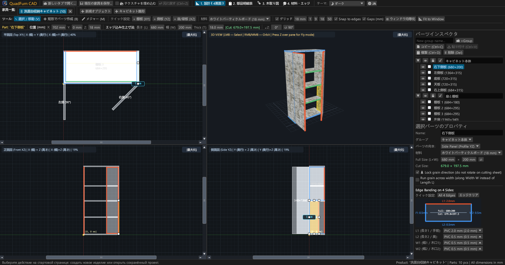
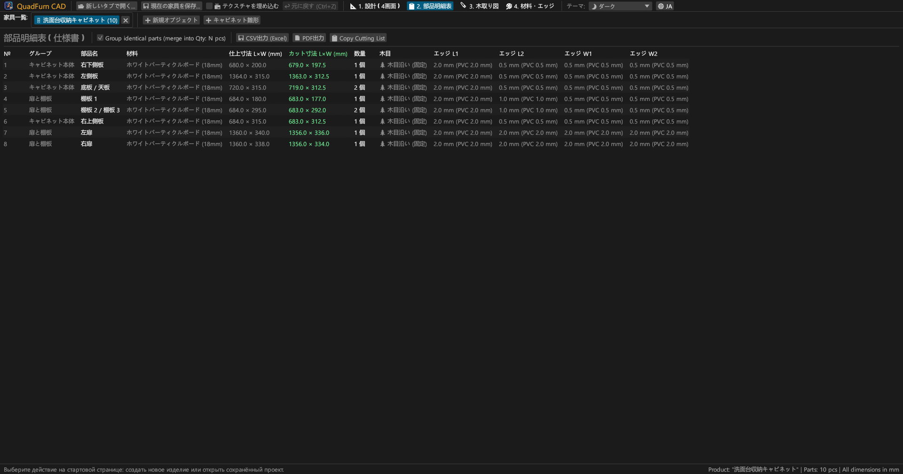
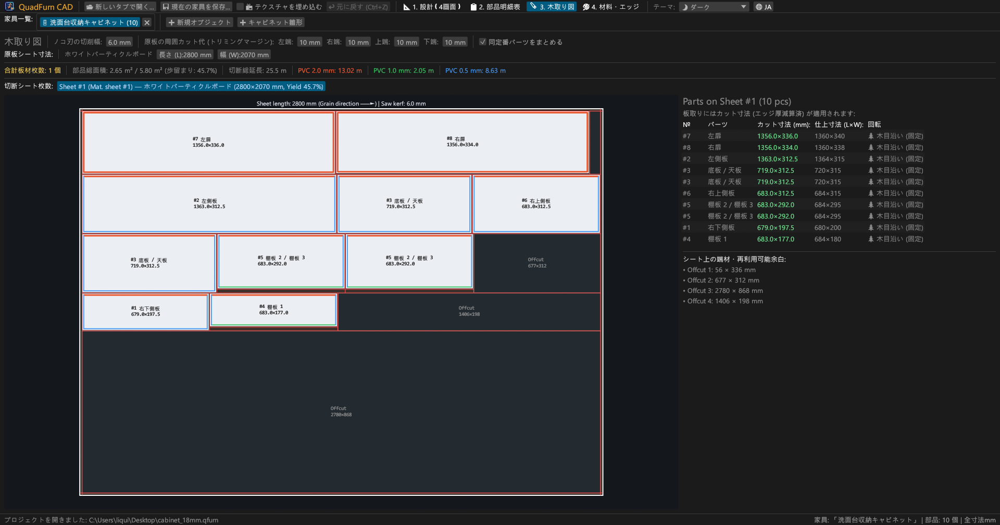
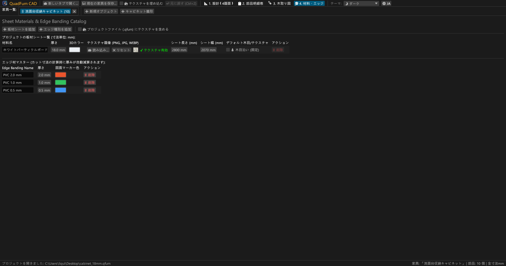
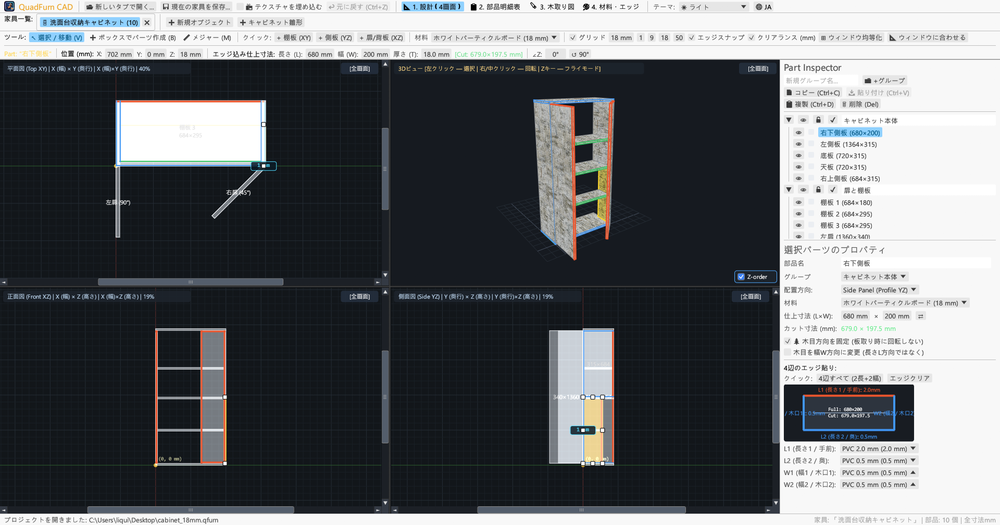
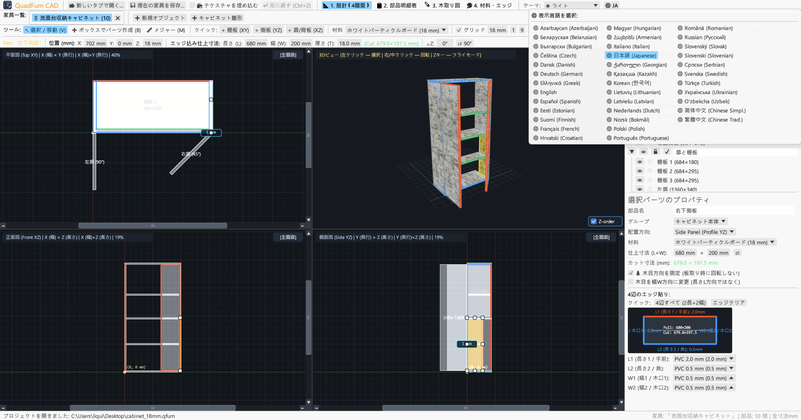

木工所・家具職人のための高速デスクトップ CAD。3D/2D 正射影図の同期編集、計算式直接入力、エッジテープ厚自動控除、板材切断最適化。

4 画面の連動作図、正確な数値入力、貫通切断（ギロチンカット）木取り計算を 1 つに統合。
上面図（XY）、正面図（XZ）、側面図（YZ）、3D パース図の 4 画面で同時編集。マグネット吸着と寸法測定。
3次元座標（X, Y, Z）、仕上がり寸法（L × W × T）、回転角（∠Z）を直接入力。入力欄に 600-4 などの四則演算式を直接入力可能。
部材の 4 辺に PVC/ABS エッジテープ厚（0.4〜2.0 mm）を割り当て、パネルソー用の正味切断寸法を自動算出。
木目方向、鋸刃のアサリ幅（例: 4.0 mm）、外周トリミング幅を考慮した最適板割り計算。残材の自動計測。
複数の家具製品をタブで同時に編集。部材をコピー＆ペースト（Ctrl+C / Ctrl+V）して別製品へ転送可能。
印刷用 A4 横向き PDF を出力：木取り表、4 画面図面、板割り配置図、材料・テープ集計（+15% 余白）。





外部ランタイム不要のスタンドアロン ネイティブ バイナリ。
ポータブル ZIP。解凍してそのまま実行可能。
sudo apt install ./quadfurn_0.2.6_amd64.deb
Apple Silicon (M1–M4) および Intel x86_64 両対応の Universal Bundle。
| キー | 動作 | 対象 |
|---|---|---|
| V | 選択・移動ツール（ドラッグ移動、8 個のサイズハンドル、矩形選択） | 2D 画面 |
| B | 矩形枠で部材を作成（現在の平面にパネルを配置） | 2D 画面 |
| M | メジャー ツール（2 点間の距離をミリ単位で計測） | 2D 画面 |
| Z | 一人称フライト モード（Z キーで視点固定、WASD で移動） | 3D 画面 |
| ← → ↑ ↓ | グリッド単位で部材を移動（Shift 併用で 2 倍移動） | 2D 画面 |
| Ctrl + C / V | 部材のコピー＆ペースト（タブ間対応） | 全タブ |
| Ctrl + D | 選択部材のオフセット複製 | 作業中プロジェクト |
| Ctrl + S | プロジェクトを .qfurn / .json に保存 | 作業中プロジェクト |
| Ctrl + Z | 元に戻す（最大 40 段階の履歴） | 作業中プロジェクト |
| Delete / Backspace | 選択部材を削除 | 作業中プロジェクト |